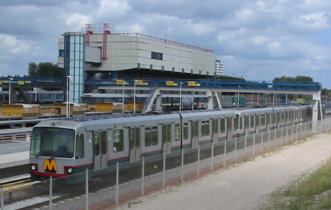
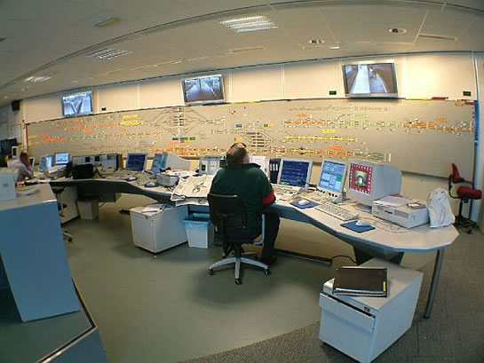
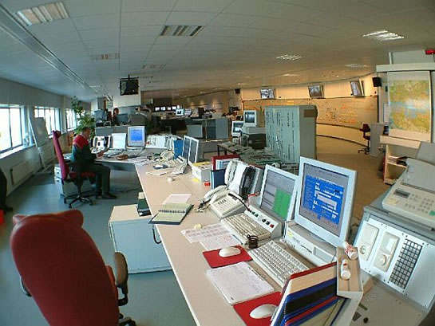
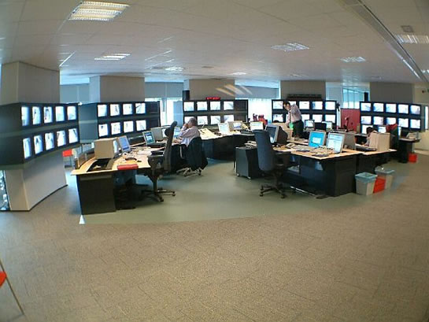

Centrale Verkeersleiding
Het kloppend hart van de RET: de Centrale Verkeersleiding, kortweg CVL. De CVL is gevestigd tussen de stations Capelsebrug en Kralingse Zoom, tegenover emplacement 's-Gravenweg. Van hieruit worden metro, bus en de tram begeleid. In geval van bijzonderheden kan de CVL ingrijpen en/of advies geven bij bepaalde omstandigheden: een uitgevallen metro of tram, een storing of een calamiteit.


Het gebouw waarin de Centrale Verkeersleiding gevestigd is.
De medewerkers op de CVL verzorgen de metrodienst, dit gebeurt door de verkeersleider en de drie treindienstleiders. Een groot wandtableau geeft de treinbewegingen weer. Elke sectie kan apart op een beeldscherm verkregen worden. Op het grote wandtableau, kan men handmatig rijwegen stellen, dit kan ook(en dat gebeurt vaker) met de computer, met behulp van het VKL(VerKeersLeider)-systeem. Hieronder een foto van het wandtableau, klik op de foto voor de grote versie:
{kind=link}
Klik op de foto voor een vergroting. Op het tableau komen letters voor, die in de volgende tabel opgesomd zijn.
| A | De Akkers |
|---|---|
| B | Binnenhof |
| C | Centraal Station |
| D | Schiedam Centrum |
| G | emplacement 's-Gravenweg |
| H | Aveling |
| K | Kralingse Zoom |
| N | De Tochten |
| P | Capelsebrug |
| S | Slinge |
| T | De Terp |
| U | Tussenwater |
| V | Verbindingsboog |
| W | emplacement Waalhaven |

De dienstleiders van de verschillende trajectdelen kunnen zowel op het wandtebleau als op hun scherm de actuele treinenloop volgen en eventueel bijsturen.
Tram en bus
Ook de bus- en tramdienst wordt begeleid vanuit de Centrale Verkeersleiding tussen de stations Capelsebrug en Kralingse Zoom. Bij verstoringen van de dienstregeling kunnen de dienstleiders van de bus en tram maatregelen treffen. Onderstaande foto geeft een beeld van de dienstleiding bus/tram.

Centralisten
Aan de andere kant van de CVL, afgezonderd van de treindienstleiding, vinden we de centralisten. Zij waken over de veiligheid van de reiziger op de stations, 24 uur per dag, 7 dagen per week, 365 dagen per jaar. Elk station wordt in de gaten gehouden. Mocht er geweld plaatsvinden op een van de stations, dan wordt er een team van RET en zonodig politie naar toegestuurd. Er is een directe verbinding tussen RET Centrale Verkeersleiding en de politie.

Relaisruimte
Onder de Centrale Verkeersleiding is de relaisruimte gevestigd van het metronet. Vanuit hier worden ATB-signalen gestuurd naar de baan zelf en andere relaisruimtes van het Rotterdamse metronet. Een ingewikkeld systeem van relais, draden en lampjes moet de relaisruimte voorstellen. Eigenlijk zijn de relaisruimten weer het kloppend hart van de Automatische Treinbeïnvloeding. Het relaissysteem kijkt of er een metro in een bepaalde sectie rijdt en geeft, indien nodig, een bezetmelding. Zie hiervoor de pagina over Automatische Treinbeïnvloeding. Voorheen zat de Centrale Verkeersleiding (toen nog Post T) op remise Hilledijk, maar ruimte werd hier te klein.